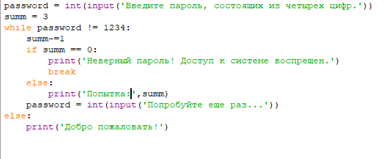

Циклы
Цикл While
Теперь же пора ознакомиться с довольно нужным и важным оператором - циклом. Данный оператор позволяет повторять действия до тех
пор, 'пока'(while в переводе - пока) истинно условие, заведомо заданное в самом цикле. Если более развернуто, то
при выполнении цикла сначала проверяется условие. При его ложности выполнение цикла передается на следующую инструкцию,
следующую после цикла while. При истинности же выполняется инструкция, после чего условие проверяется снова и снова выполняется инструкция.
И так до тех пор, пока условие будет инстинно. Опять же, как только условие стало ложным, работа цикла завершается и управление
передается следующей инструкции после цикла.
Предлагаю рассмотреть на примере:

Здесь предлагается ввести пароль с заранее заданными попытками. Сначала программа как бы говорит: пока не будет введен пароль '1234',
то из общего числа попыток отнимется 1 попытка. Также, если число попыток все же будет равно нулю, то цикл выключается. Иначе,
если число попыток не равно нулю, то считается число этих самых попыток. Если все таки условие ложное, то она проверяет следующую
инструкцию, в которой иначе(то есть равной 1234) воспринимается системой как правильный пароль и - добро пожаловать! Вот так примерно
работает данный цикл со счетчиком. Разумеется, программу можно расширить и сделать что-то интересное и это уже на ваше усмотрение.